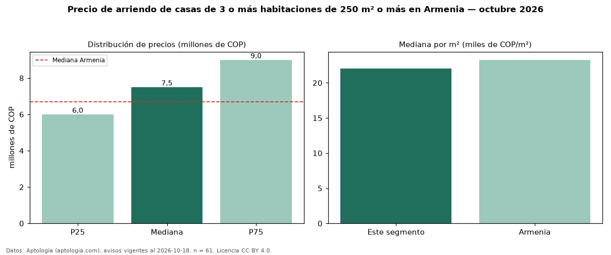

Precio de arriendo de casas de 3 o más habitaciones de 250 m² o más en Armenia — octubre 2026
Con 61 avisos vigentes, el canon mediano de casas de 3 o más habitaciones de 250 m² o más en arriendo en Armenia es COP 7,50 millones al mes. Frente a la mediana de las casas de 3 o más habitaciones en arriendo de Armenia (COP 6,50 millones, n = 86), queda 15 % por encima; este segmento reúne el 71 % de esos avisos. Por metro cuadrado, la mediana es COP 22.000/m² al mes (n = 57), 4 % por debajo de las casas de 3 o más habitaciones en arriendo de Armenia (COP 23.008/m²). El área mediana anunciada es 350 m². La administración mediana declarada es COP 1,00 millones al mes (n = 21), aparte del canon. El estrato más frecuente es 5 (50 % de los avisos con estrato). La mediana de todas las casas en arriendo de Armenia es COP 6,70 millones (+12 % de diferencia). 95 % de los avisos con el dato declara parqueadero. Datos: Aptología (aptologia.com), CC BY 4.0 — https://www.aptologia.com/arriendo/armenia. Archivos: PDF, CSV con las cifras y gráfica PNG.

| Avisos únicos | 61 |
|---|---|
| Percentil 25 | COP 6.000.000 |
| Mediana | COP 7.500.000 |
| Percentil 75 | COP 9.000.000 |
| Mediana por m² | COP 22.000 |
Fuente: avisos vigentes de portales inmobiliarios recopilados por Aptología, deduplicados (mínimo 30 avisos únicos por celda). Precios pedidos, no cerrados. Fecha: 2026-10-18.